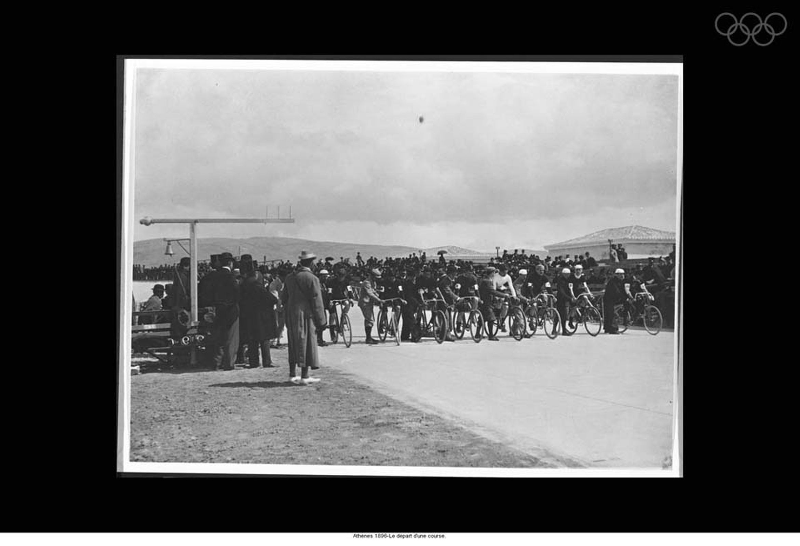
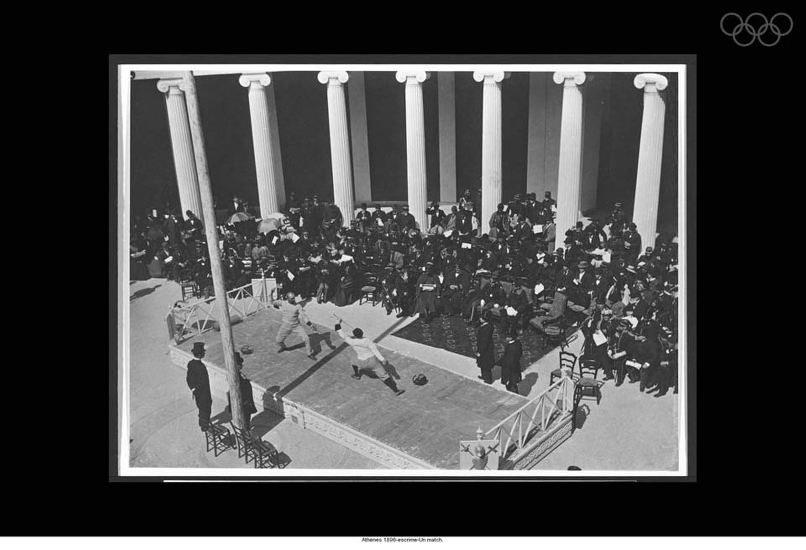
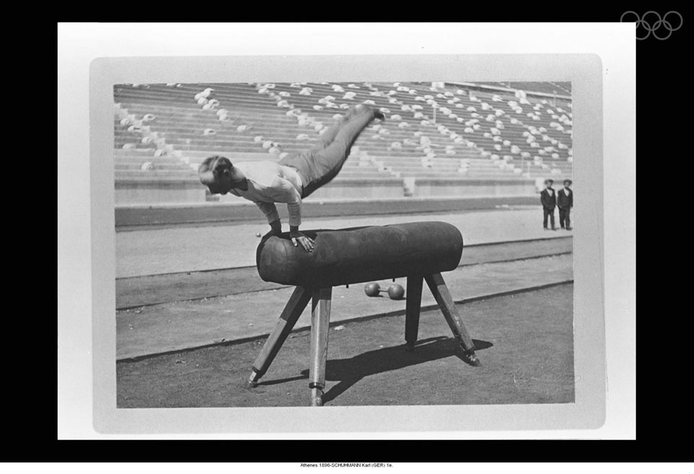

6 апреля 1896 года на отреставрированном античном стадионе в Афинах греческий король Георгий объявил первые Олимпийские игры современности открытыми. На церемонии открытия присутствовали 60 тысяч зрителей.
Дата церемонии была выбрана не случайно — в этот день пасхальный понедельник совпал сразу в трех направлениях христианства — в католицизме, православии и протестантизме. Эта первая церемония открытия Игр заложила две олимпийские традиции — открытие Игр главой государства, где проходят соревнования, и исполнение Олимпийского гимна. Однако таких непременных атрибутов современных Игр, как парад стран-участниц, церемония зажжения Олимпийского огня и произнесение Олимпийской клятвы, не было; они были введены позже. Не было Олимпийской деревни, приглашенные спортсмены сами обеспечивали себя жильем.
В Играх I Олимпиады приняли участие 241 спортсмен из 14 стран: Австралии, Австрии, Болгарии, Великобритании, Венгрии (на момент проведения Игр Венгрия входила в состав Австро-Венгрии, но на соревнованиях венгерские спортсмены выступали отдельно), Германии, Греции, Дании, Италии, США, Франции, Чили, Швейцарии, Швеции.
Спортсмены России довольно активно готовились к Олимпиаде, однако из-за отсутствия средств российская команда на Игры не была направлена.
Как и в древние времена, в соревнованиях первой Олимпиады современности принимали участие только мужчины.
Программа игр
Программа первых Игр включала девять видов спорта — борьба классическая, велоспорт, гимнастика, легкая атлетика, плавание, стрельба пулевая, теннис, тяжелая атлетика и фехтование. Было разыграно 43 комплекта наград.
  